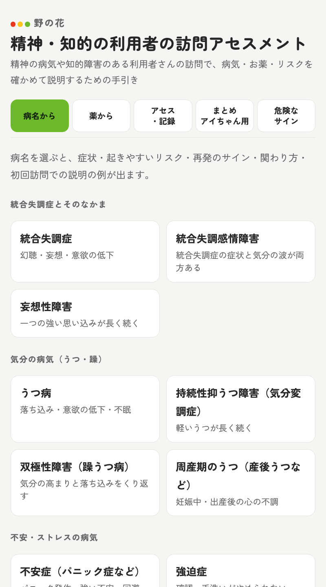
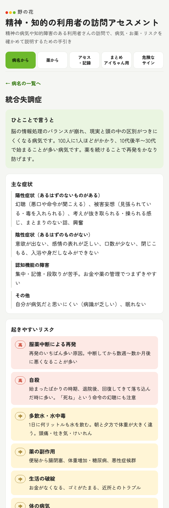
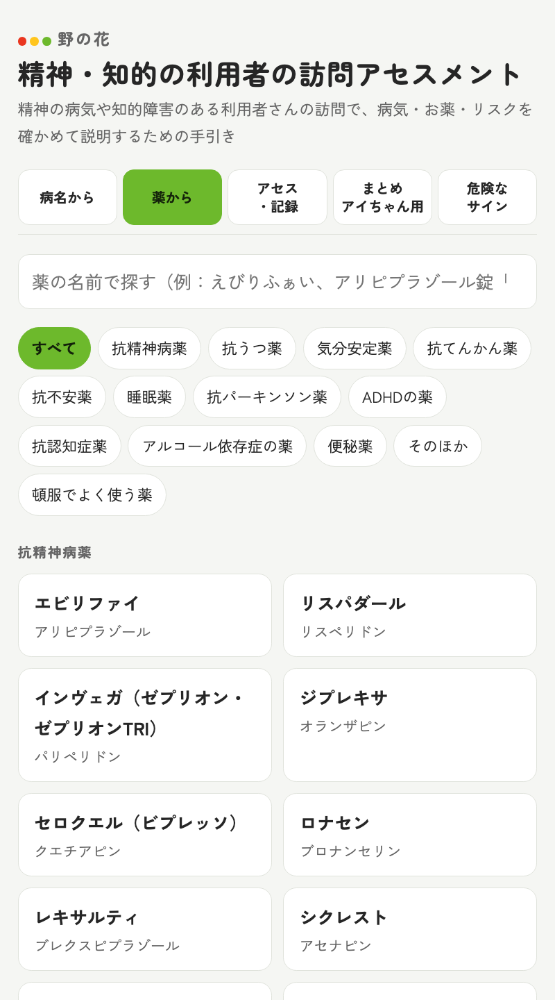
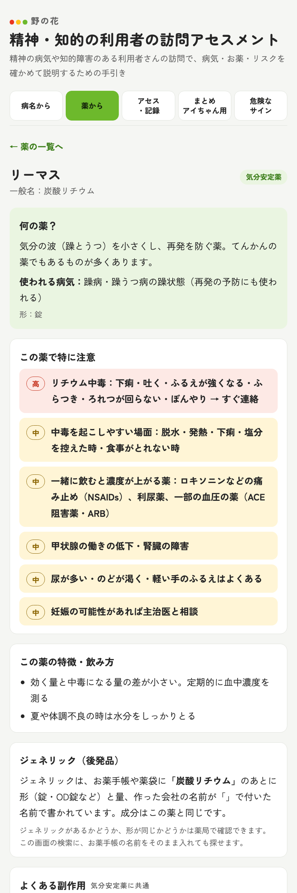
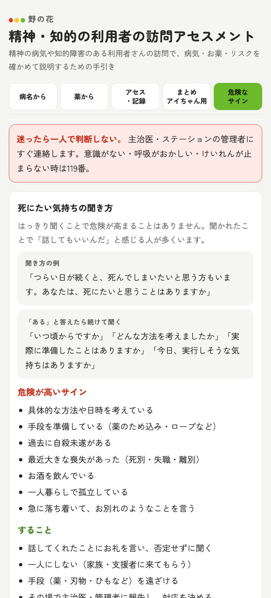
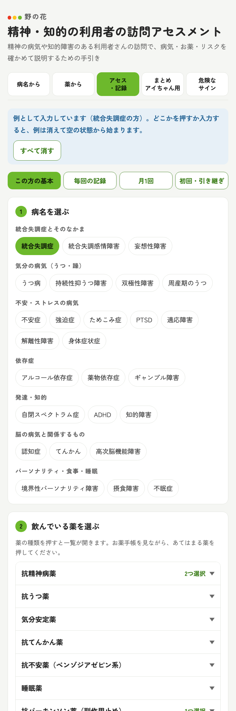
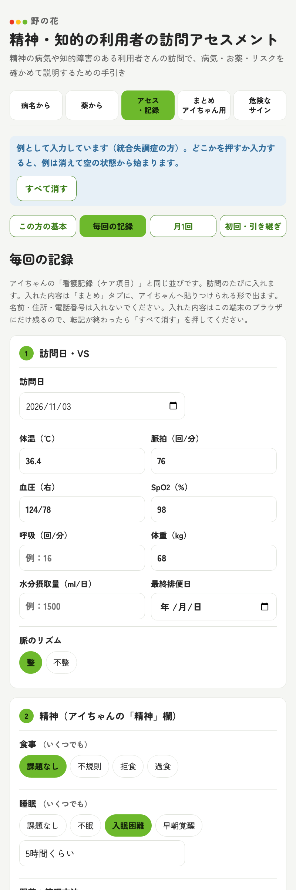
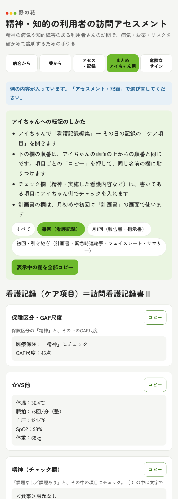

野の花
精神・知的の利用者の訪問アセスメント
使い方
訪問看護の看護師さん向けの説明書です（2026年11月版）
アプリの開き方スマホのカメラでQRコードを読むか、次のアドレスを開きます。
https://nonohana-ai.github.io/seishin/
1このアプリでできること
精神の病気や知的障害のある利用者さんの訪問で、病気・お薬・リスクを確かめて、本人やご家族に説明するための手引きです。使い方は場面に合わせて3つあります。
| 使い方 | 使う時 | 使う画面 |
|---|
| ① 調べる | いつでも。訪問の前や、知らない薬が出た時 | 病名から／薬から／危険なサイン |
| ② 初めての利用者さんの前に | 初回訪問の前、薬が変わった時 | アセス・記録 →「この方の基本」 |
| ③ 記録をアイちゃんに写す | 訪問のあと、月末、計画の見直しの時 | アセス・記録 → まとめ（アイちゃん用） |
2はじめに（ホーム画面に置く）
ホーム画面に置いておくと、アプリのようにすぐ開けます。インストールはいりません。
iPhone（Safari）
- Safariでアプリを開きます。
- 下の 共有（四角から矢印が出ている印）を押します。
- ホーム画面に追加 を押して、追加 を押します。
Android（Chrome）
- Chromeでアプリを開きます。
- 右上の ⋮ を押します。
- ホーム画面に追加 を押して、追加 を押します。
3画面の見方
上に5つのタブがあります。押すと画面が切りかわります。
病名から
26の病気を7つのグループで並べています。症状・リスク・関わり方・説明の例が出ます。
薬から
約100の薬を種類ごとに並べています。名前で探せます。
アセス・記録
利用者さんの病名・薬を選び、訪問の記録を入れる画面です。中に4つのタブがあります。
まとめ
入れた内容を、アイちゃんの欄の順番で文章にします。欄ごとにコピーできます。
危険なサイン
死にたい気持ちの聞き方と、すぐ連絡が必要な14の状態です。
4使い方① 病気や薬を調べる
病名から
- 病名から を押して、調べたい病名を押します。
- 「ひとことで言うと」「主な症状」「起きやすいリスク（高・中）」「再発のサイン」「こう関わる・避けたい対応」「説明の例」が出ます。
- 下の「よく使われる薬」の名前を押すと、その薬の説明に移ります。

病名の一覧

病名を押したところ（統合失調症）
薬から
- 薬から を押します。
- 上の検索欄に薬の名前を入れます。ひらがなでも、お薬手帳の書き方（例：アリピプラゾール錠「サワイ」）のままでも見つかります。
- 薬を押すと、何の薬か・特に注意すること（禁忌・警告は赤）・よくある副作用・すぐ連絡するサイン・説明の例が出ます。
上の絞り込みで 頓服でよく使う薬 を押すと、頓服の使い方の決まりも出ます。

薬の一覧と検索

薬を押したところ（リーマス）
危険なサイン
悪性症候群、リチウム中毒、セロトニン症候群など、すぐ連絡が必要な状態の「こんな様子」「起きやすい場面」「すること」が出ます。死にたい気持ちの聞き方も、いちばん上にあります。

危険なサイン
5使い方② 初めての利用者さんの前に
お薬手帳を見ながら、その利用者さんの病名と薬を選びます。選んだ組み合わせから、その人だけの注意が出ます。
- アセス・記録 を押し、中のタブの この方の基本 を押します。
- 「1 病名を選ぶ」で、あてはまる病名を押します（いくつでも選べます）。
- 「2 飲んでいる薬を選ぶ」で、薬の種類（抗精神病薬など）を押して一覧を開き、飲んでいる薬を押します。頓服で出ている薬は、下の「選んだ薬」で 頓服 も押します。
- 「3 あてはまること」で、65歳以上・糖尿病・お酒を飲む・一人暮らし・自殺未遂の経験などを押します。
- 下に「この方で特に気をつけること」が出ます。赤い「高」から先に読んでください。
- 「初回訪問での説明の例」を参考に、本人・ご家族に説明します。「初回訪問の聞きもれチェック」で、聞き忘れがないか確かめます。
はじめて開いた時例として、統合失調症の方の内容が入っています。どこかを押すか入力すると、例は消えて空の状態から始まります。

この方の基本（病名・薬・あてはまることを選ぶ）
6使い方③ 記録をアイちゃんに写す
アセス・記録 の中の3つのタブで入れて、まとめ からアイちゃんに写します。ほとんどの項目は、ボタンを押して選ぶだけです。
| タブ | 入れる時 | まとめで出るアイちゃんの欄 |
|---|
| 毎回の記録 | 訪問のたび | 看護記録（ケア項目）：VS、精神の欄、精神症状、実施した看護内容、全身状態、指導・教育、連携 |
| 月1回 | 月末、指示書が届いた時 | 報告書（精神）：病状の経過、看護の内容、GAF など／指示書の期間と照らし合わせ |
| 初回・引き継ぎ | 初回、計画の見直し、入院や引き継ぎの時 | 計画書、フェイスシート、サマリー、緊急時連絡票 |
アイちゃんへの写し方
- 入れ終わったら、下の まとめを見る（アイちゃん用） を押します。そのタブの分だけが出ます。
- アイちゃんで、写す画面を開きます（看護記録なら「看護記録編集」→ その日の記録の「ケア項目」）。
- アプリの欄の コピー を押し、アイちゃんの同じ名前の欄に貼りつけます。まとめの欄は、アイちゃんの画面の上からの順番と同じです。
- 「精神」の欄や「実施した看護内容」のようなチェックの欄は、まとめに書いてある項目に、アイちゃん側でチェックを入れます。
- 内容を確かめて、アイちゃんで保存します。
（案）と書いてある欄全身状態・病状の経過・看護の目標・療養上の課題などは、入力からアプリが作った文の案です。読んで直してから使ってください。報告書の病状の経過は1回分の数字なので、ひと月分の記録を見て「体温35.7〜36.9℃」のように直します。

毎回の記録（ボタンで選ぶ）

まとめ（欄ごとにコピー）
71人終わったら「すべて消す」
このアプリは、一度に1人分しか持てません。次の利用者さんに移る前に、必ず消してください。
- アイちゃんに写し終わったことを確かめます。
- すべて消す を押します。ボタンが「もう一度押すと全部消えます」に変わります。
- もう一度押すと、全部消えます（元に戻せません）。
前の日の内容が残っている時「前の日に入れた内容が残っています」と出ます。別の利用者さんなら すべて消す、同じ利用者さんの続きなら 続けて使う を押します。
8個人情報の決まり
利用者さんの名前・住所・電話番号は、アプリに入れないでください。住所・電話・家族の連絡先は、アイちゃんで直接入れます。
- 名前や電話番号のような文字を入れると、その欄が赤くなり、注意が出ます。消してください。
- 入れた内容は、そのスマホの中にだけ残ります。だれかに送られることはありません。
- 共用のスマホを使う時は、最後に必ず「すべて消す」を押してください。
- まとめの文を、LINEのグループなど、ほかの人が見られる所に貼らないでください。
9困ったとき
- 「コピー」を押してもコピーできない
- ボタンが「選んだ文をコピーしてください」に変わった時は、文が選ばれた状態になっています。長押しして「コピー」を押してください。
- 薬が見つからない
- お薬手帳の成分名（ジェネリックの名前）で探してください。それでもない時は、一覧にない薬です。お薬手帳や薬局の説明書を見てください。
- 例の内容が入ったまま
- どこかを押すと消えます。「すべて消す」を2回押しても消えます。
- 画面がおかしい・動かない
- ページを読み込み直してください（下に引っぱる、または再読み込みのボタン）。
- 新しい版が出たのに古いまま
- ページを読み込み直すと、新しい版になります。
10気をつけること
- 病気・薬の内容は、2026年11月時点の添付文書・ガイドラインをもとにした一般的な要点です。量・飲み合わせ・禁忌の最終確認は、添付文書・主治医・薬剤師で行ってください。
- アプリの注意（高・中）は、入力した範囲から出しています。出ていないから安全、ということではありません。
- 意識がない・呼吸がおかしい・けいれんが止まらない・自殺のおそれが差し迫っている時は、迷わず119番。そのあと管理者に連絡します。
- 分からないこと、直してほしいことは、管理者に伝えてください。